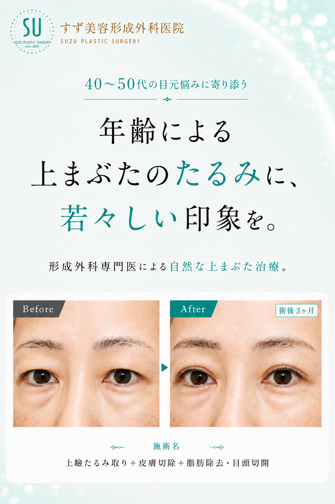
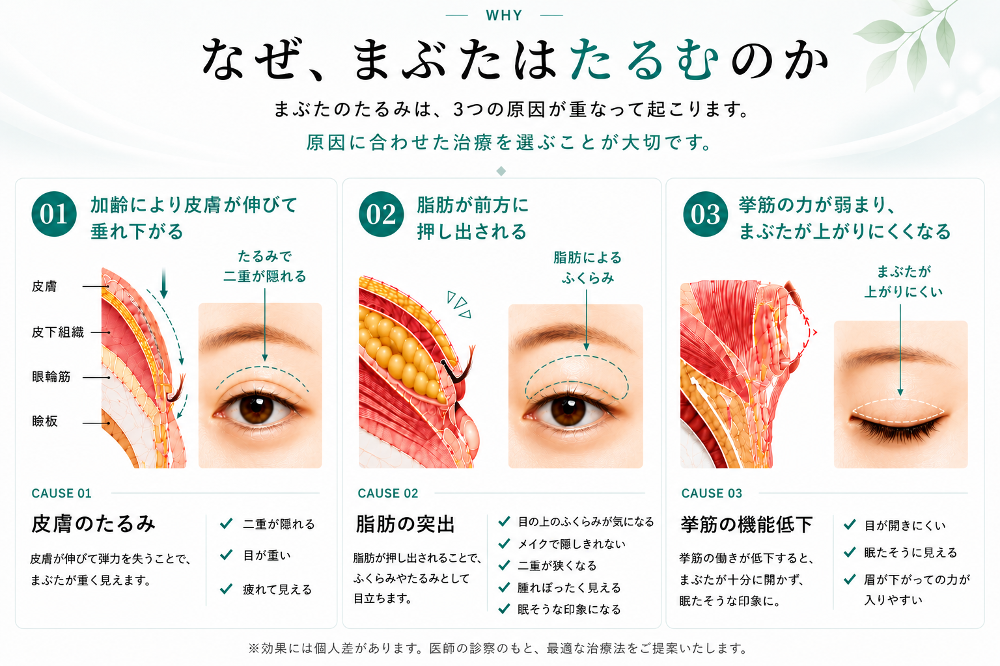
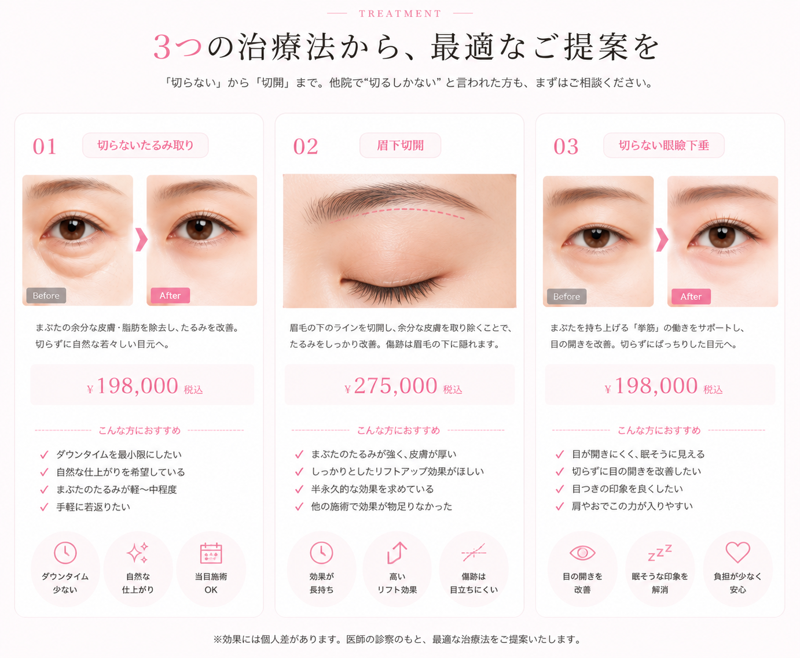
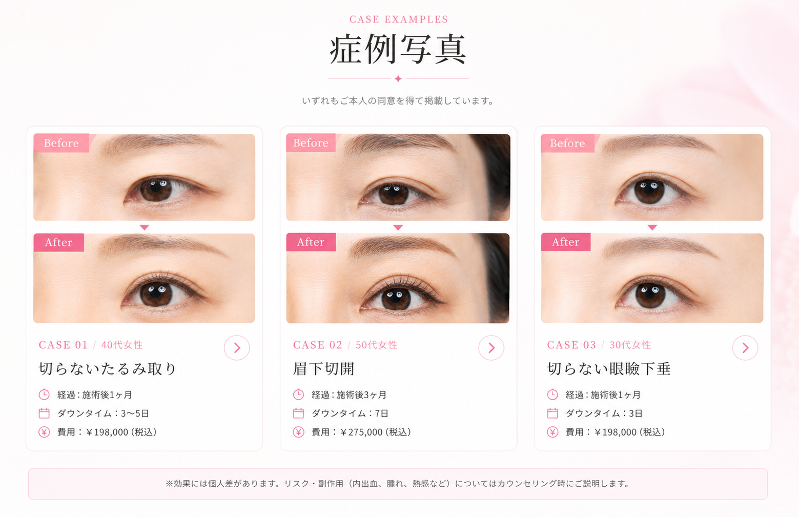

SPECIALIST
形成外科専門医による
高度な縫合技術
日本形成外科学会認定の専門医。大学病院・大手形成外科病院での豊富な臨床経験に裏付けられた縫合技術で、傷跡の細さと自然な仕上がりを実現します。

放っておくと、見た目年齢に大きく影響することも。
一つでも当てはまる方は、まぶたのたるみが原因かもしれません。


※ 料金・条件は仮設定。確定後に更新します。
※ 価格はすべて税込です。
※ 麻酔料・手術検査料（¥11,000）・点滴投薬料（¥11,000）が別途かかる場合がございます。
※ キャンペーン期間：2026年6月1日（月）〜 6月30日（火）。料金・条件は仮設定。
形成外科専門医ならではの、技術と仕上がりへのこだわり。
SPECIALIST
日本形成外科学会認定の専門医。大学病院・大手形成外科病院での豊富な臨床経験に裏付けられた縫合技術で、傷跡の細さと自然な仕上がりを実現します。
FULL LINEUP
皮膚のたるみ・脂肪・眼瞼下垂など、原因に応じて切らない施術から全切開まで幅広い選択肢をご用意。他院で「切るしかない」と言われた方にも対応いたします。
0.1mm SCAR
切開範囲をミリ単位でコントロールし、必要最小限の切除に留めることで腫れ・内出血を抑えます。精緻な縫合技術により、傷跡が極限まで目立たない仕上がりに。

カウンセリング無料・契約不要・当日施術も可
「切る手術＝長い休み」というイメージを変えたい。
形成外科で培われた精緻な縫合技術で、ダウンタイムを最小化し、傷跡が極限まで目立たない仕上がりを実現します。
お電話・LINE・予約フォームから。
お悩み・ご希望をお伺いします。
原因を見極め最適な施術をご提案。
当日または別日に施術を実施。
術後の経過もしっかりサポート。
切らない施術：1〜3日／切開：5〜7日程度で落ち着きます。
個人差があり、出る場合は1〜2週間で消失します。メイクで隠せる程度。
切開を伴う施術は5〜7日後に抜糸。糸の施術では抜糸不要です。
稀に起こる可能性がありますが、当院で責任を持って対応いたします。
| 月 | 火 | 水 | 木 | 金 | 土 | 日 | 祝 |
| ― | ● | ● | ● | ● | ● | ― | ― |